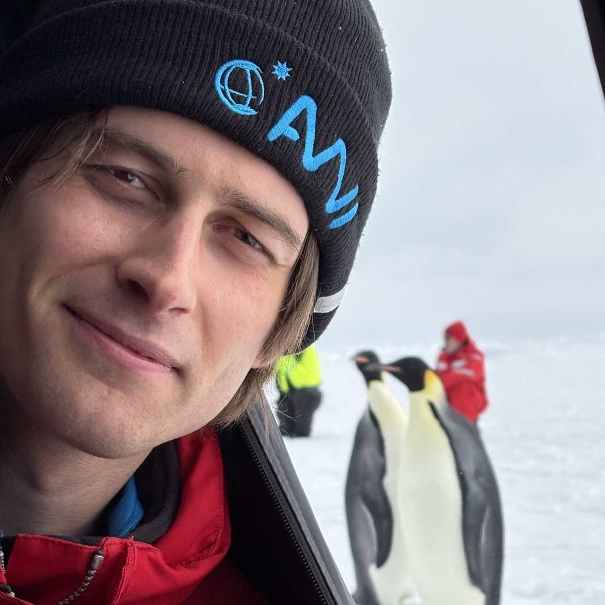

Doctoral candidate 2024–present
LMU Munich & Alfred Wegener Institute · Germany

full cv available on request · rowan.brown [at] lmu.de
LMU Munich & Alfred Wegener Institute · Germany
University of Alberta · Canada
Memorial University of Newfoundland · Canada
LMU Munich & Alfred Wegener Institute · Germany
Investigating Southern Ocean convection through high-resolution modelling (MITgcm) and observational (mooring, remote sensing, etc.) data analysis.
University of Alberta · Canada
Oceans Limited · Canada
Topics: Applied ocean engineering, troubleshooting operational software, exploring machine-learning methods for surface wave prediction, and weather buoy design.
"Shallow Convective Plumes in the Seasonally Sea Ice-Covered Southern Ocean Drive Deep Ocean Heat Release."
SCAR Open Science Conference 2026, Oslo, Norway. [Oral presentation]
University of Alberta Education and Research Archive, 1–88. [Master's thesis]
The Ocean Sciences Meeting 2024, New Orleans, LA, USA. [Poster presentation]
Aalto University publication series SCIENCE + TECHNOLOGY 1/2019, 1-66. [Technical report]